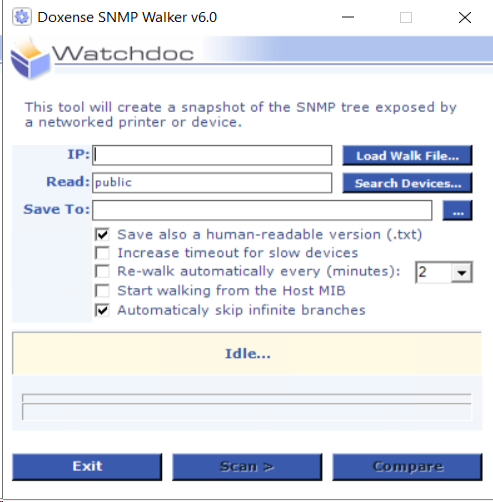
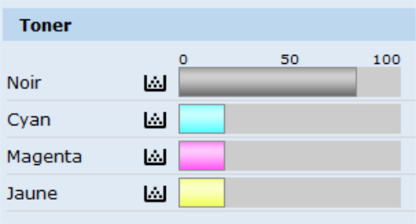
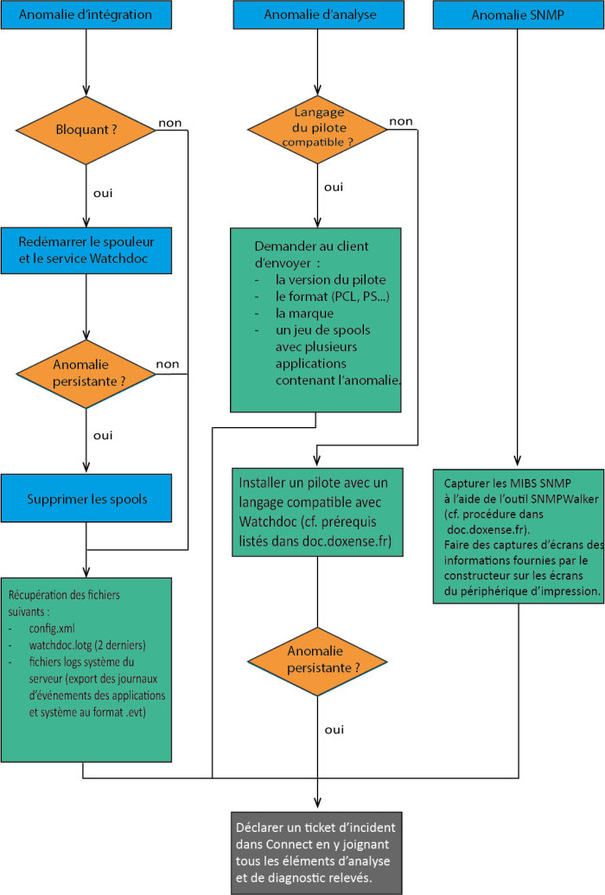

Connect - Aide à l'analyse avant l'intervention du Support Doxense
Principe
Il est possible que vous rencontriez des anomalies ou des dysfonctionnements lors de l’installation, la configuration ou l’utilisation d'un logiciel Doxense.
est le portail que Doxense utilise pour gérer l'ensemble des relations avec son réseau de clients et de partenaires. Le portail Connect vous permet :
-
de soumettre des demandes de licences ;
-
de déclarer des incidents relatifs à la gestion de vos produits sous forme de tickets au Support Doxense®. Grâce au formulaire de déclaration d'incident, vos demandes sont structurées et vous pouvez y ajouter des informations complémentaires (logs, fichiers de configuration, captures d’écran, etc.) ;
-
de suivre le traitement de vos tickets et d'être notifié lorsque leur statut change ;
-
d'être associé aux demandes de tickets des membres de votre organisation et d'en suivre le traitement.
Son utilisation rigoureuse permet à Doxense® de vous apporter le meilleur support en ligne, conforme à nos engagements contractuels, tout en garantissant la traçabilité du traitement des demandes. Elle permet également de nous aider à concevoir la documentation adaptée à vos attentes et à vos besoins.
L'équipe Support Doxense a besoin d'informations pour contextualiser, reproduire et analyser l'anomalie que vous soumettez. Merci de fournir le maximum d'informations relatives à la survenue du dysfonctionnement en répondant aux questions suivantes :
-
Quoi ? Merci de fournir une procédure permettant de reproduire le problème.
-
Quand ? Merci de préciser la date et l'heure de survenue du problème, s'il a été ponctuel ou s'il s'est reproduit.
-
Où ? Merci de préciser la marque et le modèle du périphérique d'impression, l’interface d’administration ou l’interface d’utilisation sur lesquels est survenu le problème.
-
Qui ? Merci de fournir les informations du compte utilisateur concerné par le problème (annuaire LDAP, SQL, Entra ID, base Invités (WSC), etc.)
-
Logs Watchdoc : merci d'attacher le fichier de logs obtenu à l'aide de l'outil WatchdocDiag Tool (cf. Fournir des logs avec Watchdoc Diag Tool).
-
Logs WPC for Windows : merci d'attacher le fichier de logs spécifique (cf. Dépanner WPC for Windows).
-
WES log files : pour un incident relatif à un WES, merci d'activer les traces de chaque file concernée par l'incident (cf. Activer les WES traces).
-
Logs Skyprint : merci d’attacher le fichier de logs spécifique (cf. Dépanner Skyprint).
L'équipe Support Doxense pourra ainsi répondre plus rapidement et efficacement à votre demande.
Merci pour votre coopération !
Catégoriser l’incident
Il est possible de classer les anomalies des logiciels Doxense en 3 catégories :
-
Anomalie d’intégration
Anomalie qui se produit lors de l’installation ou de l’utilisation du logiciel.
Les éléments nécessaires à l'analyse d'une anomalie d'intégration sont les suivants :
-
une description précise : plus la description est précise, plus vite l’anomalie est identifiée plus la description est précise, plus l'anomalie peut être identiée vite ;
-
les fichiers traces (logs) de Watchdoc : il convient de fournir les logs du jour où l'anomalie est détectée en précisant l'heure à laquelle le problème s'est produit. Par défaut, ces fichiers sont présents dans le répertoire C:\Program Files\Doxense\Watchdoc\logs ;
-
les journaux d’événement du serveur : il convient de fournir les journaux d’événements Applications et Système, exportés au format .evt qui permettent d'accélérer l'analyse de l'anomalie ;
-
le fichier de configuration (config.xml) de Watchdoc situé dans le dossier "Data" par défaut.
-
Anomalie d’analyse
Anomalie qui apparaît dans l’historique du logiciel (par exemple, une impression de N pages n’a pas été comptabilisée).
Les éléments nécessaires à l'analyse d'une anomalie d'analyse sont les suivants :
-
soit un descriptif précis de l’environnement :
-
type de système du serveur
-
type de système du poste client
-
informations relatives au pilote du périphérique d'impression : PCL, PS, version, paramétrage particulier
-
version du logiciel Watchdoc.
-
-
soit un jeu de spools documentés dans le cas où il n'est pas possible d'accéder à l'environnement pour en collecter directement les éléments d'analyse.
Exemple : Watchdoc indique que les impressions sont en couleur même lorsqu'on force l’impression en N&B à partir du pilote :
-
le serveur est équipé de Windows Server 2003 SP1, le poste est sous Mac OS 10.4, nous utilisons le driver PS générique de l’OS Mac et l’application Photoshop 9.X.
-
voici 4 spools provenant d’une impression MAC sous X.4 à partir de Photoshop 9.X. Le premier spool est une image imprimée en couleur. Le deuxième spool consiste en l’impression de la même image mais forcée en N&B. Même chose pour les 2 autres spools avec une autre image.
-
-
Anomalie SNMP
Anomalie relative aux informations remontées dans le logiciel Doxense par les périphériques d’impression (informations de compteurs, consommables, numéros de série, etc.)
Les éléments nécessaires à l'analyse d'une anomalie SNMP sont les suivants :
-
Fichiers générés par SNMP Walker (C:\Program Files\Doxense\Watchdoc\Tools\SNMPwalker par défaut) :

-
Capture de l'écran du périphérique d'impression contenant l’information erronée (exemple : niveaux de consommables faussés) ou le message d'erreur :

{kind=link}
Organigramme de la gestion d’incident

Commentaires du schéma :
-
Bloquant : signifie que les utilisateurs ne peuvent plus imprimer ou débloquer leurs impressions.
-
Capturer un jeu de spools : le terme "spool" désigne un fichier d’édition envoyé d'une application vers un périphérique d’impression. Le spool a le plus souvent l'extension .spl (ou .shd).
Pour capturer les spools, il convient de mettre en pause le périphérique d'impression contrôlé par Watchdoc.
Pour permettre l'analyse, joignez à votre ticket les documents pour lesquels vous avez constaté des anomalies ainsi que les spools correspondants, dans la file d’attente du spouler (par défaut C:\Windows\system32\spool\PRINTERS).
-
Capturer des MIBS SNMP : le terme MIB désigne un ensemble structuré d’informations émis par une entité réseau (périphérique d’impression en ce qui nous concerne).
Le logiciel SNMP Walker, disponible dans le package Watchdoc (C:\Program Files\Doxense\Watchdoc\Tools\SNMPWalker\SNMPWalker.exe par défaut) permet de récupérer ces MIBS.
Pour l'utiliser, référez-vous à la documentation disponible dans le site doc.doxense.fr (cf. SNMP Walker - Capturer des walks).
Plusieurs captures (4 à 5 toutes les dix minutes) sont nécessaires pour analyser les champs d’informations.
-
Supprimer les spools : un document corrompu peut saturer le CPU du spooler Watchdoc. Il convient de supprimer les spools pour libérer le CPU :
-
stoppez le service Watchdoc, le LPD service et le spooler d'impression ;
-
supprimez le contenu des répertoires suivants ;
- • C:\Program Files\Doxense\Watchdoc\Data\JobStore.jsdb\Jobs
• C:\Program Files\Doxense\Watchdoc\Data\Spools\JobStore
• D:\Spool\printers
-
redémarrez
-
le spooler
-
le service LPD service
-
Watchdoc
-
-
N.B. : ces actions suppriment la totalité les documents envoyés pour impression. Les utilisateurs doivent relancer leurs impressions.